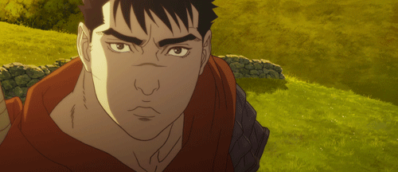
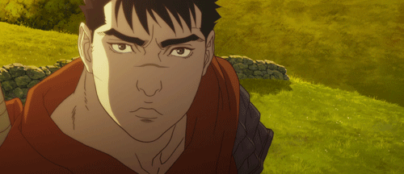
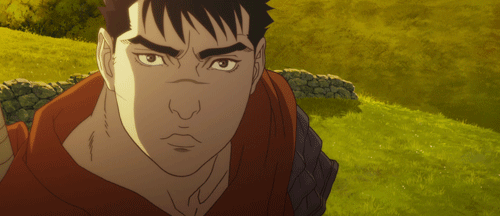

Anime
Faça pesquisa
Pesquisar e conhecer trabalhos, autores, escolas, estúdios, correntes, etc. Conhecer a “cultura” e o “estado da arte” da área.
Surge nos anos 60 (Osamu Tezuka) Vários géneros, estilos visuais, suportes/canais (OVA, ONA, etc.), públicos EvolutivaOsamu Tezuka. Fotografia de William Maanders.
The production of anime focuses less on the animation of movement and more on the realism of settings as well as the use of camera effects, including panning, zooming and angle shots. Diverse art styles are used and character proportions and features can be quite varied, including characteristically large emotive or realistically sized eyes. In the 1960s, manga artist and animator Osamu Tezuka adapted and simplified many Disney animation techniques to reduce costs and to limit the number of frames in productions. He intended this as a temporary measure to allow him to produce material on a tight schedule with inexperienced animation staff Prior to the digital era, anime was produced with traditional animation methods using a pose to pose approach. Cel animation mixing cel animation with computer-generated images. Unlike Disney animation, where the emphasis is on the movement, anime emphasizes the art quality and let limited animation techniques make up for the lack of time spent on movement. Such techniques are often used not only to meet deadlines but also as artistic devices. Anime is cinematically shot as if by camera, including panning, zooming, distance and angle shots to more complex dynamic shots that would be difficult to produce in realityFaça pesquisa
Pesquisar e conhecer trabalhos, autores, escolas, estúdios, correntes, etc. Conhecer a “cultura” e o “estado da arte” da área.
Osamu Tezuka, Hayao Miyazaki (Studio Ghibli) Spirited Away
"Smear animation": movement is rapid and portrayed in only three frames: the beginning state, the ending state, and a "blur" frame similar to that of a picture taken with a camera that had a low shutter speed.

Body proportions of human anime characters tend to accurately reflect the proportions of the human body in reality.
The height of the head is considered by the artist as the base unit of proportion. Head heights can vary, but most anime characters are about seven to eight heads tall.
Anime artists occasionally make deliberate modifications to body proportions to produce super deformed characters that
feature a disproportionately small body compared to the head; many super deformed characters are two to four heads tall.
A common anime character design convention is exaggerated eye size.
The animation of characters with large eyes in anime can be traced back to Osamu Tezuka,
allowed for the entire range of human emotions to be depicted solely through the eyes
The artist adds variable color shading to the eyes and particularly to the cornea to give them greater depth. Generally, a mixture of a light shade, the tone color, and a dark shade is used.
Hair in anime is often unnaturally lively and colorful or uniquely styled. The movement of hair in anime is exaggerated and "hair action" is used
to emphasize the action and emotions of characters for added visual effect.
 


anime features characters whose race or nationality is not always defined, and this is often a deliberate decision,
variety of visual symbols are employed, including sweatdrops to depict nervousness, visible blushing for embarrassment, or glowing eyes for an intense glare


Use of camera techniques such as panning to suggest movement. A famous implementation of this is the "crash" technique,
which involves the camera shaking rapidly back and forth or up and down to simulate a shock wave.


Cels, and sequences of cels, used repeatedly; animators only have to draw a character walking once.
Characters are split up into different levels: only portions of a character, such as the mouth or an arm, would be animated on top of a static cel.
Clever choice of camera angles and editing.

utilização de manga auxiliares
Sliding a cel across a background to suggest movement.


Stock footage: sequences that are reused frequently. This is the case of the character transformations
Faça pesquisa
Pesquisar e conhecer trabalhos, autores, escolas, estúdios, correntes, etc. Conhecer a “cultura” e o “estado da arte” da área.
Mais de 400 empresas de produção Minutos de TV anime (sem OVAs e filmes) Géneros: kodomo (infantil), shōjo (raparigas), shounen (rapazes), hentai (pornográfico), fantasia, ficção-científica (inclui mecha), desporto, etc.